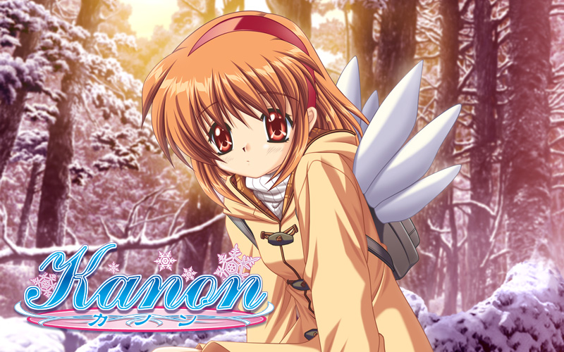
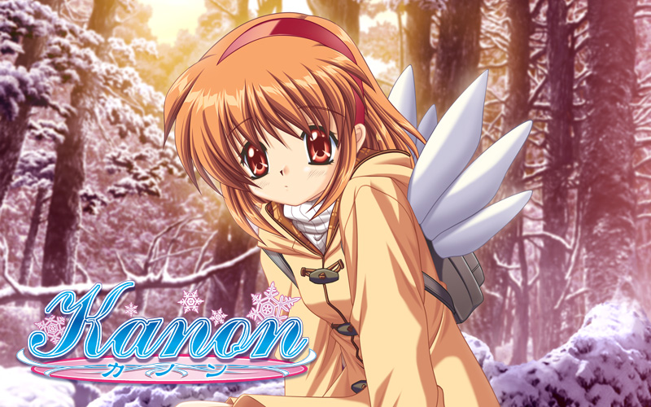

1
2
3
這是第一幅圖片哈哈哈
這是第二幅圖片咩
到第三幅了！
KEY作品
點擊圖片會有遊戲介紹
遊戲介紹
遊戲開始時間是某年的4月14日。在某個小鎮， 主角岡崎朋也因為家庭的因素而喪失了生活在 這個地方的希望；與春原陽平為朋友，在光坂 高等學校過著潦倒的生活，盼望終有一天能夠 離開所在的小鎮。在高三的一個早晨，通往學 校的坡道前發現了一個止步不前的女孩，在朋 也認識了這個名為「古河渚」的女孩後，他的 生活開始有了重大的變化。校園篇為主角和女 主角們之間所發生的事件，After story為主角 在學校畢業之後，以及家庭生活，其中還關聯 著「幻想世界」，CLANNAD就是由這三個要 素所組成的故事。遊戲介紹
DREAM篇 在第一條故事路線「DREAM篇」之中，雜耍藝人 國崎往人依從已故母親的遺言，不斷在日本各地流 浪並尋找著「天空中的女孩」。 SUMMER篇 發生1,000年前的平安時代。武士柳也被派遣擔任 傳說中的翼人後代神奈備命的隨身，並在這裡結 識了正在學習法術的女官裏葉。儘管備命為遊戲 中虛構種族翼人的最後後裔，但是她就如同一名 囚犯般被迫軟禁在自己的神殿中；而儘管其背上 有著常人沒有的翅膀，但是備命仍然被迫不能擅 自飛離神殿外的城牆，甚至也不能去探望同樣被 軟禁於其他地方的母親。遊戲介紹
這是一個描述因家庭因素而到北國小鎮寄住 在身為表親的少女家中的少年與在那小鎮中 相遇的少女們的戀愛故事，時間是 1999年1月6日。作為一個遊戲，在故事中 玩家必須從這些少女們中選出一人來繼續 推進劇情。即便是最初的十八禁版中情色的 成分也相當稀薄，主要是以少女們的背景及 其相關的故事為重點內容。 許多的愛好者給了被劇情感動落淚的絕佳評 價，自此之後，在遊戲中加入令人感傷感動 的要素，通稱「泣きゲー（催淚遊戲）」類 型的遊戲開始流行，對此後這類文字冒險戀 愛遊戲帶來了相當大的影響。Key作品(動畫級數列表)
Clannad-兩季
話數
01
02
03
04
05
06
07
08
09
10
11
12
13
14
15
16
17
18
19
20
21
22
標題
桜舞い散る坂道で
最初の一歩
涙のあとにもう一度
仲間をさがそう
彫刻のある風景
姉と妹の創立者祭
星形の気持ち
黄昏に消える風
夢の最後まで
天才少女の挑戦
放課後の狂想曲
かくされた世界
思い出の庭を
Theory of Everything
困った問題
3 On 3
不在の空間
逆転の秘策
新しい生活
秘められた過去
学園祭に向けて
影二つ
首播日期
2007-10-04
2007-10-11
2007-10-18
2007-10-25
2007-11-01
2007-11-08
2007-11-15
2007-11-22
2007-11-29
2007-12-06
2007-12-13
2007-12-20
2008-01-10
2008-01-17
2008-01-24
2008-01-31
2008-02-07
2008-02-14
2008-02-18
2008-03-06
2008-03-13
2007-03-20
話數
01
02
03
04
05
06
07
08
09
10
11
12
13
14
15
16
17
18
19
20
21
22
標題
夏の終わりサヨナラ
いつわり愛をさがし
すれちがう心
あの日と同じ笑顔で
君のいた季節
ずっとあなたそばに
彼女の居場所
勇気ある戦い
坂道の途中
始まりの季節
約束の創立者祭
突然の出来事
卒業
新しい家族
夏の名残に
白い闇
夏時間
大地の果て
家路
汐風の戯れ
世界の終わり
小さな手のひら
首播日期
2008-10-03
2008-10-10
2008-10-17
2008-10-24
2008-10-31
2008-11-07
2008-11-14
2008-11-21
2008-11-28
2008-12-05
2008-12-12
2008-12-19
2009-01-08
2009-01-15
2009-01-22
2009-01-29
2009-02-02
2009-02-12
2009-02-19
2009-02-26
2009-03-05
2009-03-12
話數
01
02
03
04
05
06
07
08
09
10
11
12
標題
かぜ～breeze～
まち～town～
こえ～whisper～
はね～plume～
つばさ～wing～
ほし～star～
ゆめ～dream～
なつ～summer～
つき～moon～
ひかり～light～
うみ～sea～
そら～air～
首播日期
2005-01-06
2005-01-13
2005-01-20
2005-01-27
2005-02-03
2005-02-10
2005-02-17
2005-02-24
2005-03-03
2005-03-10
2005-03-17
2005-03-24
話數
01
02
03
04
05
06
07
08
09
10
11
12
13
標題
雪の少女
日溜まりの街
たった一つのさな記憶
夜へ
The Fox and the Grapes
彼女たちの見解
舞踏会
少女の檻
笑顔の向こう側に
冬の花火
約束
夢の跡
風の辿り着く場所
首播日期
2002-01-30
2002-02-06
2002-02-13
2002-02-13
2002-02-20
2002-02-20
2002-02-27
2002-03-13
2002-03-20
2002-03-20
2002-03-27
2002-03-27
2002-03-27
Key三大作品
CLANNAD(春系列)故事「家庭」主題
簡介:
《CLANNAD》這個詞中，Clann在凱爾特語中的意思是“家族”。
動畫部分，2007年9月15日電影版動畫于日本公開上映。
動畫于日本播放，其第二季‘Clannad After Story’
也于2008年10月2日开始播放。
內容:
家庭 . . 被我拒絕的地方： Clannad的男主角——罔崎朋也
，是一個拒絕與家人交流、留在家裡的人。幼年時，母親
因故去世，父親因此整日借酒澆愁，在初中時，因為一次家
庭暴力而使得父子關係落到了谷底。從此以後，朋也與父親形同陌路。
AIR(夏系列)故事「希望與傳承」主題
簡介:
電視動畫《AIR》是根據Key社同名遊戲改編 的動畫作品，由京都動畫製作。于2005年1月6日首播，共12話。 內容: 國崎往人為了聽從已故母親的遺言，四處旅行目的 是為了尋找並解救「天空中的女孩」，途中以用 法術表演人偶為生。一天，往人來到一個地處海邊的小鎮， 在那裡遇上了神尾觀鈴，並暫時寄宿在觀鈴家，後來往人 在和觀鈴的一路相處之下，覺得可能觀鈴就是他一直要 尋找的那個女孩子。KANON(冬系列)故事「奇蹟、夢、愛情、友情、希望」主題
簡介
《Kanon》改編自同名遊戲作品，2002年由東映動畫改編為電視動畫劇情， 即動畫版第一作（也稱東映版、舊版、第一季），由伊藤尚往執導，共13集。 該片講述了故事的主人公相澤祐一與五個女孩相遇的故事。 內容: 父母到国外工作，被一個人留在國內到高中畢業的相澤佑一， 因轉學而再度來到這個七年不見的北方小镇。迎接他的是小時候的玩伴， 也是表親的水瀨名雪。七年前失去的、重要的記憶、曾經在這個街道上 認識的人、被遺忘的約定，雖然是在寒冷的冬天，還是開始慢慢的解凍。 與七年後的現實所交錯的記憶，随著時間緩慢浮現在腦海中。KEY介紹
歷史:
在KEY成立以前，曾經制作了兩部幾乎是由之前KEY 的原班人馬所制作的作品， 分別為《MOON》和《ONE～輝之季節～》 （原制作公司為Tactic， 但制作班底主要是後來加入Key的制作人員） 這兩款遊戲知名度雖然不如KEY的 正式作品《Kanon》和《AIR》， 音樂方面也沒有I've的參與，但無論劇本還是 音樂方面的水準都相當的高，《ONE～輝く季節へ～》 更是被譽為泣きゲー的鼻祖作品。 這兩部作品的成功也使得KEY的實力鋒芒初現。 之后《MOON》與《ONE～輝く季節へ～》 的大部分制作班底退社轉投ビジュアルアーツ（Visual Art's） ，並于1998年年底成立的新的品牌“Key”。三大作品 遊戲&作品 出售時間
Clannad
2004-04-28所推出視覺小說第一季《Clannad》動畫 2007-10-04播出
第二季《Clannad》動畫 2008-03-27播出
AIR
2000-09-08所推出視覺小說《Air》動畫 2004-11-17日播出
2005-02-05，91分鐘《AIR》動畫電影
Kanon
1999-06-04日所推出的視覺小說 第一版《Kanon》動畫2002-01至3月播出第二版《Kanon》動畫 2006-10-05日播映
KEY作品特點
家族，親情，愛情，友情，奇蹟，未來，希望
KEY社的作品永遠閃耀著人性的光輝,
絕大多數人看了KEY社的作品都會落淚，
可是落淚的同時我們卻在幸福的微笑著。
在溫馨而美好的音樂中我們潸然淚下，
留在心頭的卻是讓人無法釋懷的美麗與愛，
還有對未來的憧憬。
人性的理解
KEY成功，靠的不是“美輪美奐”的畫面，
也不是”精彩刺激”的劇情，是對人性的理解。
《ONE》珍惜人與人之間的羈絆
《Kanon》像一個童話故事
《AIR》遙不可及的神話般的故事
《CLANNAD》強調親情
傳達
KEY要傳達給我們，並不是一種消極的思想或者灰色
的人生觀，相反， 在我們深受感動的同時，是KEY讓
我們明白了“溫柔”與“堅強”的真諦，是KEY給予
了我們無論受到多大的挫折，哪怕只剩下最後的一口
呼吸，也要繼續頑強地走下去的勇氣！ KEY，一個嶄
新的名字，一個奇蹟般的名字，一個無可替代的名字。
季節戀曲
「春」的《CLANNAD》
「夏」的《AIR》
「秋」的《One》
「冬」的《Kanon》
關於三神作
有一種感動常常不見
卻又時常想念春天的櫻花
在長長的坡道上飛舞的漫天絢爛
-----------------------------------------------------
夏夜的螢火
穿梭在林間訴說著千年的傳說
-----------------------------------------------------
冬日的落雪
是誰拂去了圍巾上沉積的曠古冰寒
-----------------------------------------------------
家族之愛，飛鳥之詩，思念之鄉。
-----------------------------------------------------
不是依附在我們的生命裡，卻是在別人的生命裡感動我們， 於是終要將它們滿懷感動地擁入心懷 . . .」